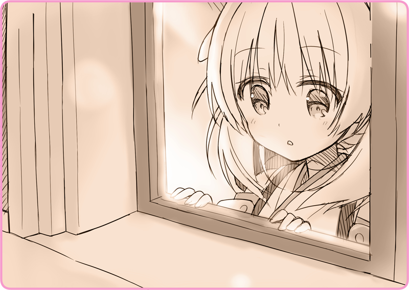

プリマドール・アンコール
03-01 冬の花火（１）
それは、黒猫亭が開店するより、すこし前のこと。
アルタリア共和国。そこは大陸西部に位置する由緒ある国だ。海峡を渡ればセヴィル＝ノヴァの荒涼とした大地が広がっており、そこを三日三晩鉄道で駆け抜ければ小さな島国に至る。
東邦皇国……この国がアルタリアに軍事侵攻したのはもう数十年前の話だ。些細な事件を切っ掛けにした火種が、燃え上がるのは一瞬だった。
早々に白旗を揚げたアルタリアを、皇国は直接併合しようとはしなかった。皇国の野心はさらにその先――。大陸最大国家である帝政ローベリアにあったからだ。長い国境を接するこの国は、前線拠点とするには持って来いだった。共和国政府は皇国の傀儡となり、いつしか我が物顔で皇軍が駐屯しはじめた。幾多の混乱と衝突の末、アルタリア人と東邦人は奇妙な緊張関係を保って暮らしていた……。
＊ ＊ ＊
夜空は凍てつくような寒さに閉ざされている。
東の連峰から吹き付ける風が、煙のように細雪を巻き上げる。コートを首元まで固く閉め合わせ、すっぽりとフードを被ってもなお襲ってくる、刺すような寒気。粉雪はファーの先に、溶けることなくまとわりついていた。
それでも新年を迎えるこの日、人々は通りに繰り出している。アルタリアの首都レバルジャクはお祭り騒ぎで、あちこちで白い吐息が漏れ出している。儚げなランタンの灯りを頼りに、総主教会を目指して陽気な行進を続けているのだ。もっとも、聖歌広場は十数万人という人で埋め尽くされているので、いまからでは敷地内に立ち入ることすらできないだろう。
リリア「すみません、通ります」
リリアは声を上げると、車椅子を押す。雪に車輪が取られて、思うように進まない。物珍しそうな周囲の視線を気にせずに行列の脇を抜けていく。車椅子の上には、リリアより一回り小柄な少女の姿。ストールを幾重にも巻いて、毛皮の帽子を目深に被っている。肩にはうっすらと雪が積もっていた。
不意に行き交う人々が足を止めて、どよめきを上げる。しゅるしゅると夜空を駆ける音が聞こえてきたのは一息遅れてだった。赤紫色の光が、ぱっと辺りを包み込む。そして轟音。花火が上がったのだ。新年を祝う声があちこちから聞こえてくる。二発目、三発目……花火は次々上がり、そのたびにまた歓声。こうなるともう行進どころではない。
もう誰もリリアに注目していなかった。ぎゅっと車椅子のグリップを握りしめる。そして、そっと行列を離れると脇道へと歩みを進めていく。
警官「お嬢さん、どうされました」
呼び止める声にどきりとした。背後に立っているのは、口ひげを生やした警官だ。岩を思わせる、灰色がかった重厚なコートに身を包んでいる。肩には小銃。
リリア「妹が、気分が良くないと……」
警官「ああ、それはいけない。暖かい場所までご案内しましょう」
リリア「すこし休めば大丈夫ですので」
警官「遠慮せずに。妹さん、お加減はどうだい」
警官は膝を折って、車椅子の少女をのぞき込む。暗がりで表情は伺えない。糸が切れたように項垂れており、帽子の端からは金髪が垂れ下がっている。
ぱっと夜空が煌めく。また花火が上がったのだ。一瞬の発光に、少女の横顔が照らされる。そっと閉じられた目蓋。滑らかな頬。そこからはなんの感情も読み取れない……。
警官「……人形？」
リリア「眠っているだけです。ありがとうございます、失礼します……」
リリアは早口にまくし立てると、重い車椅子を進ませた。
警官「あ、ちょっと、君！」
呼び止められる声を振り切るように、路地の暗がりの中へと足早に駆けていく。
連発花火が上がり、再び人々が興奮の声を上げる。警官はすぐには追ってこなかった。いまのうちに逃げなければ。応援を呼ぶかも知れない。早くどこかに隠れないと。でも、どこに？ 街はひっそりと静まりかえっており、どの家も鎧戸を落としている。
リリア「……あ」
暖かな光が飛び込んできた。
そこは石造りのこぢんまりとした家だ。朱色に塗られた壁。二階からは柔らかなランタンの灯りが漏れ出している。窓辺にはひとりの少女の姿。

瑠璃色の瞳が、リリアを見つめる。
首を傾げると、くすんだ桜色の髪が揺れていた。
＊ ＊ ＊
くすんだ桜色の髪の少女は、なにも疑いを知らない顔でころころと笑う。
暖炉はとろ火程度だが、外気と比べるとここは天国だ。
えっちらおっちら薪を運んでくると、次々とくべている。あんなにたくさん入れてうまく燃えるのだろうかと思うほどに。ごしごしと顔を拭っているが、煤がついたせいで鼻先は黒く汚れてしまっていた。
繊細な模様の入った着物は、東邦人独特の服装だ。背中には少女に不釣り合いな、鈍色の背嚢。煙突が一本伸びていて、うっすらと水蒸気を覗かせている。
「ありがとう。その……」
リリアは濡れたフードを下ろす。ひとつに結んだ金髪が窮屈さから解放されるように踊った。
「あなたは、もしかして……人形？」
そして、部屋に招かれた時からずっと抱えていた違和感を口にした。
なんの屈託もなく、彼女はそう口にした。
「灰桜……私はリリアよ」
リリアの前にある車椅子。その前にかがみ込むと、顔をのぞき込む。さっきからずっと、糸が切れたように視線を伏せたままだ。
「この子、人形なの」
「歌劇人形よ」
「ステージで人々を楽しませる人形よ。あらかじめ命令電文を送っておくとね、人間ではできないような見事な踊りと、レコード顔負けの歌をうたうの」
しかし、ふと混乱した様子で首を傾げる。
「ごめんなさい、灰桜。私、嘘を付いてしまったわ」
新年の祭りに来たが、家族とはぐれてしまった。
妹は病気なので、この寒空の下待ちぼうけは体に悪い。
だから少しの間、室内に入れてもらえないだろうか。
そういって、この暖かな部屋に通してもらったのだ。
でも、それはすべて口から出任せだ。
「私はね、レバルジャク少女歌劇団の団員なの。逃げてきたのよ、この子と一緒に」
どんどんどん！
不意に乱暴なノック音が響いて、リリアは心臓が締め付けられる思いだった。
『夜分に失礼！ 警察です！ 遠間博士はご在宅ですかな！』
野太い声が響く。
微かに響く金属音は、おそらく小銃の金具だろう。
灰桜はどうしていいか分からない様子で、ただおろおろしている。
「お願い、いないって言って……」
リリアは懇願するように声を上げた。とっさに灰桜の小さな手を取る。
ちらりと車椅子に乗せられた人形を見つめる。
灰桜に協力して貰わなければ。どうやって？ この少女型の、無邪気で無力な人形の心に訴えなければ……。
「この子、徴用されるの。戦争に取られてしまうのよ」
外に悟られないように小声で、それでいて切々と訴える。
「私の友達なの、離ればなれになりたくない……だから逃げてきたの」
果たして、リリアの懇願は灰桜に届いた。
ぎゅっとリリアの手を、灰桜は両手で握りしめる。
すこし煤で汚れていて、でもぽかぽかと暖かかった。
鼻息も荒く、力強く頷く。
執筆：丘野塔也 挿絵：まろやか ＣＶ：和氣あず未（灰桜）
©VISUAL ARTS / Key